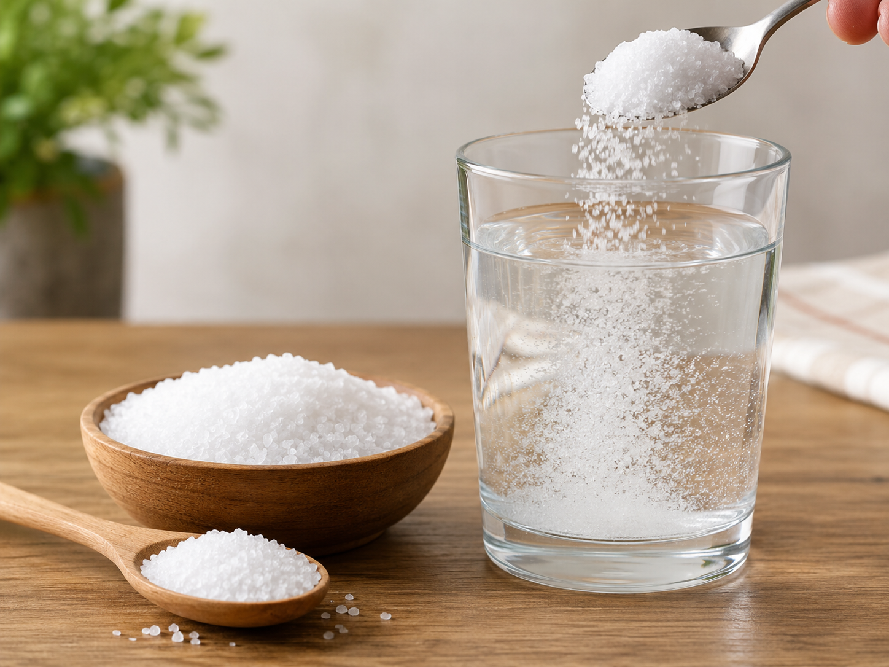
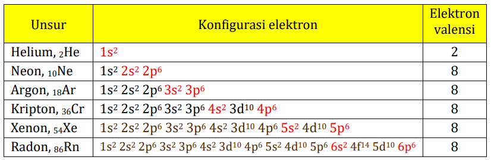
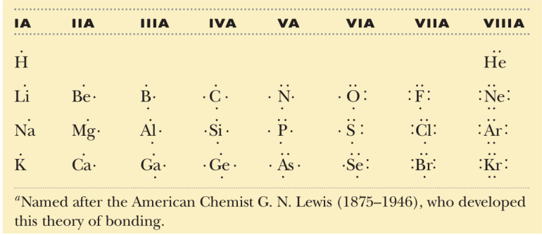
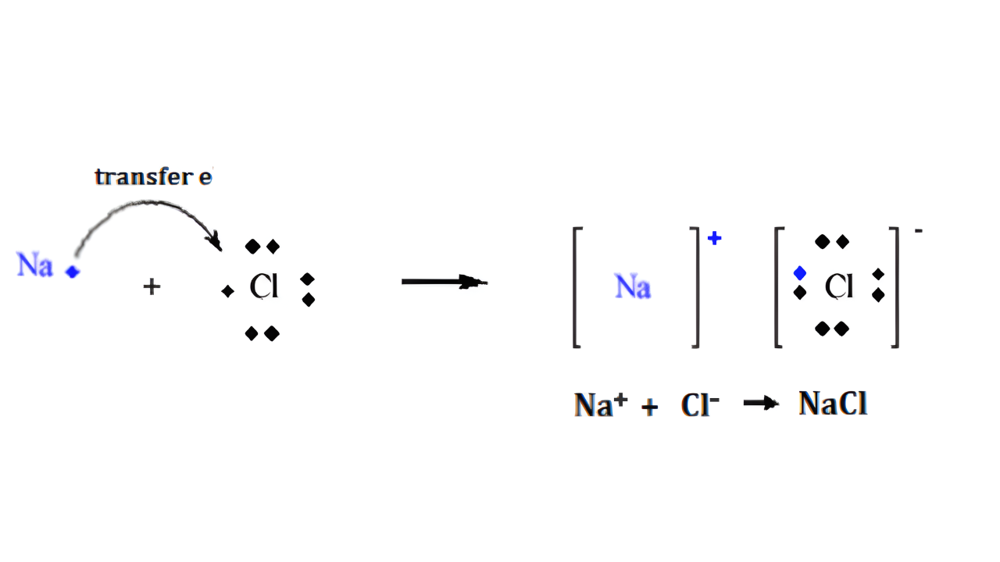
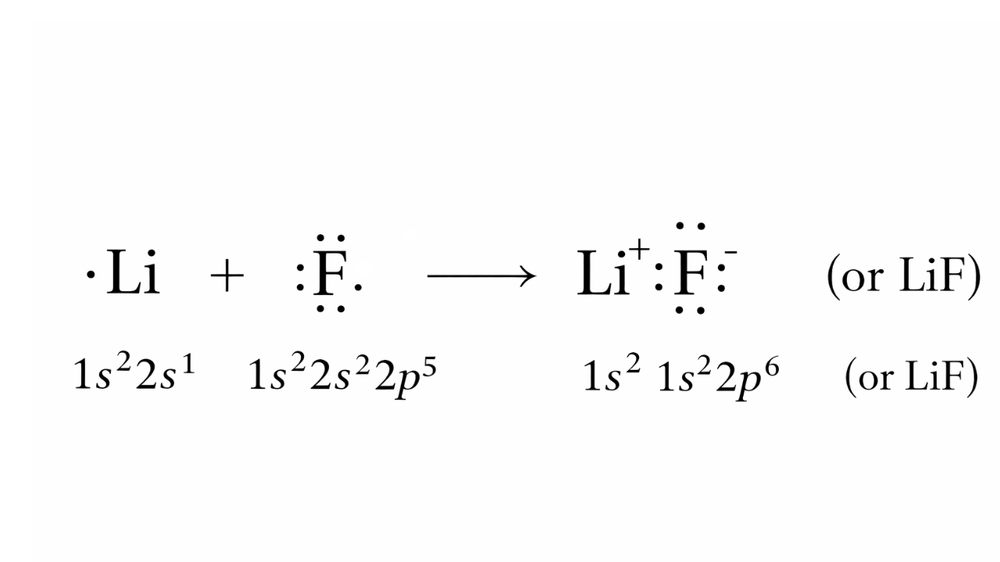
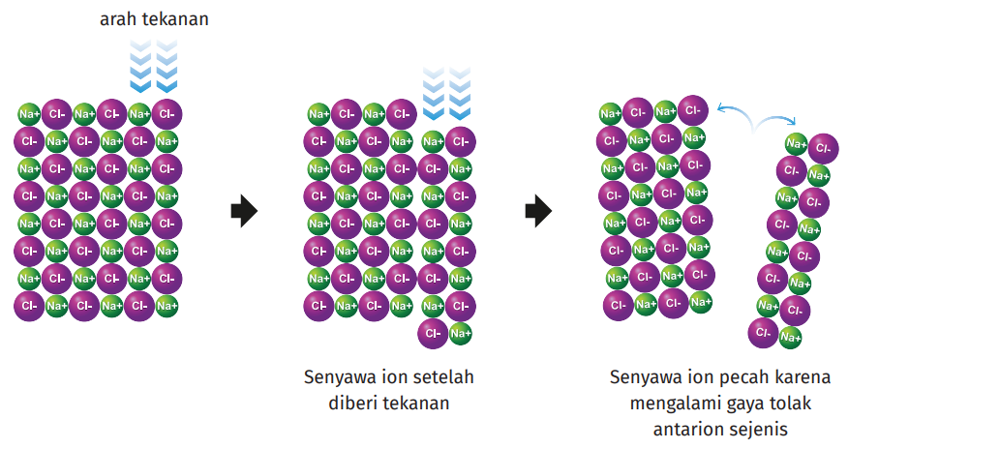

Nama: ...
Kelas:
Tanggal:

Perhatikan benda-benda di sekitar kalian: garam dapur (NaCl) berbentuk padat dan rapuh, air (H₂O) berbentuk cair, sedangkan logam seperti tembaga atau besi bersifat kuat dan dapat menghantarkan listrik. Walaupun semuanya tersusun dari atom-atom, setiap zat memiliki bentuk dan sifat yang sangat berbeda.
Perbedaan ini terjadi karena atom-atom penyusun zat tersebut bergabung atau berikatan dengan cara yang berbeda. Mari kita pikirkan bersama sebelum mempelajari lebih lanjut tentang ikatan kimia.
1. Mengapa garam berbentuk kristal padat, sedangkan air berbentuk cair?
2. Mengapa logam dapat menghantarkan listrik, tetapi garam padat tidak?
Klik tab materi berikut untuk melihat ringkasan sebelum mengisi tabel.
Unsur di alam umumnya tidak stabil sehingga jarang ditemukan bebas, lebih sering sebagai senyawa. Atom-atom berikatan untuk mencapai keadaan yang lebih stabil. Kelompok unsur yang relatif stabil adalah gas mulia (Golongan VIIIA) karena kulit terluarnya terisi penuh sehingga bersifat inert/sukar bereaksi. Sehingga ikatan kimia merupakan hasil interaksi antaratom untuk mencapai kestabilan dan dapat menghasilkan molekul serta senyawa baru dengan sifat yang berbeda dari unsur-unsur penyusunnya.

Atom mencapai kestabilan dengan cara melepas, menerima, atau berbagi elektron sehingga jumlah elektron valensinya menyerupai gas mulia terdekat.
Dalam pembentukan ikatan, yang berperan adalah elektron pada kulit terluar (elektron valensi). Untuk mempermudah penggambaran, digunakan simbol titik Lewis.

Unsur segolongan memiliki jumlah elektron valensi sama sehingga simbol titik Lewis serupa.
Ikatan ion (elektrovalen) umumnya terbentuk antara logam dan nonlogam. Logam cenderung melepaskan elektron → kation, sedangkan nonlogam cenderung menerima elektron → anion. Ikatan terjadi karena gaya tarik elektrostatik antara kation dan anion.

Li melepas 1 e⁻ → Li⁺, F menerima 1 e⁻ → F⁻. Li⁺ dan F⁻ tarik-menarik → terbentuk LiF.


Saat dipukul, lapisan kristal bergeser, ion sejenis tolak-menolak sehingga kristal mudah pecah (rapuh).
Petunjuk:
Gunakan tabel periodik berikut untuk membantu menentukan konfigurasi elektron dan elektron valensi.
💡 Kamu bisa scroll dan klik unsur pada tabel untuk melihat informasi lengkapnya.
Lengkapi konfigurasi elektron berikut!
| Unsur | Konfigurasi | Valensi | Kecenderungan |
|---|---|---|---|
| Na | |||
| Cl | |||
| H | |||
| O |
1. Unsur manakah yang cenderung melepas elektron?
2. Unsur manakah yang cenderung menerima/berbagi elektron?
3. Jelaskan proses Na dan Cl membentuk NaCl!
4. Jelaskan proses H dan O membentuk H₂O!
5. Tuliskan perbedaan cara pembentukan ikatan pada NaCl dan H₂O.
| Zat | Unsur Penyusun | Jenis Unsur | Ikatan |
|---|---|---|---|
| NaCl | Na, Cl | Logam-Non | |
| CaCO₃ | Ca, C, O | ||
| KCl | K, Cl | ||
| CaSO₄ | Ca, S, O |
Lengkapilah pernyataan berikut!
1. Hubungan antara jenis unsur penyusun dengan pembentukan ikatan ion adalah…
2. Ikatan ion terjadi karena adanya gaya tarik-menarik antara ion .......... dan ion ..........
3. Atom logam cenderung membentuk ion bermuatan ..........
4. Atom nonlogam cenderung membentuk ion bermuatan ..........
5. Senyawa ion dapat menghantarkan listrik dalam keadaan .......... atau ..........
| Pernyataan | Ya | Tidak |
|---|---|---|
| Saya memahami aturan oktet dan duplet dalam kestabilan unsur | ||
| Saya dapat menjelaskan proses pembentukan ikatan ion | ||
| Saya dapat menjelaskan sifat-sifat fisis senyawa ion | ||
| Saya masih perlu belajar kembali materi ikatan ion |